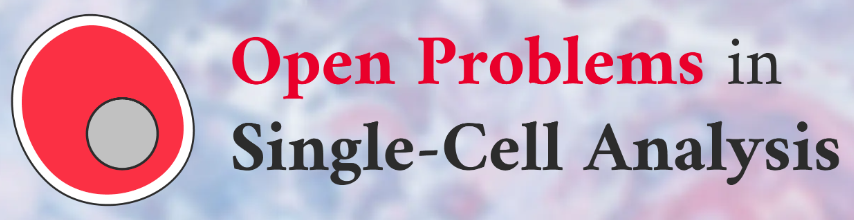
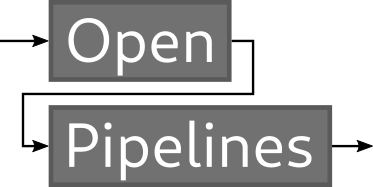

Use Cases

Viash Powers the NeurIPS Open Problems Competition
NeurIPS open problems are a set of challenging research problems in the field of artificial intelligence that are identified and presented at the annual NeurIPS conference. These problems are intended to stimulate research and encourage the development of new and innovative approaches to solving them.
The open problems are selected by the NeurIPS program committee and are typically related to current and emerging topics in machine learning and computational neuroscience. They are designed to be significant and impactful and they are meant to encourage collaboration and research.
The NeurIPS open problems competition is a separate event that is held in conjunction with the conference, in which researchers can submit their solutions to the open problems and compete for prizes. This competition data workflows are all developed with Viash.
NeurIPS Open Problems Website Open Problems Github

Open Pipelines: Best-practice Workflows for Single-cell Single- and Multi-omics data
Breakthroughs in single-cell genomics have been made possible by the simultaneous advancement of experimental and computational technologies. While experimental techniques standardize quickly, computational analysis pipelines are more challenging to compare and thus vary. Analysis platforms such as Seurat and Scanpy have facilitated pipeline building and introduced basic quality standards. Furthermore, we have made first attempts at standardizing workflows for scRNA-seq to bridge the language-gap between these platforms and their users.
However, as new analysis methods are being proposed at an increasing rate and novel multi-omic sequencing technologies are becoming commonplace, there is an urgent need for new analysis standards for single-cell (multi-)omics data.
OpenPipelines are best-practice workflows for single-cell single- and multi-omics data. To ensure these workflows are accessible to non-experts and can be deployed in a fast and reproducible way, we will build these into reproducible, modular and updatable best-practice analysis pipelines using industry-standard workflow tools, high-performance versions of popular methods and an interoperable, language-independent framework.
Open Pipelines Website Open Pipelines Github
Article or grahic
Text
Tech Talk Blog
list with titles of the blog - possible?
image of article
Press
25/11/2022: Fueled by VLAIO and Driven by innovation
Data Intuitive is pleased to announce that we have received funding from VLAIO which will enable us to further our research and development efforts and continue to push the boundaries of data science and bioinformatics data pipelines. We are grateful for the support of VLAIO and are excited to see what the future holds as we continue to innovate and progress in our field.

15/12/2022: FIT to Go Global
We are thrilled to announce that this website is being created with the funding of Flanders International. This funding will not only help us to create a professional and user-friendly website, but it will also support the international expansion of our company. We are grateful for the support and belief in our mission and we look forward to working with them as we continue to grow and develop on a global scale. Thank you, FIT, for your contribution to our success.